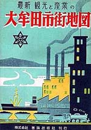
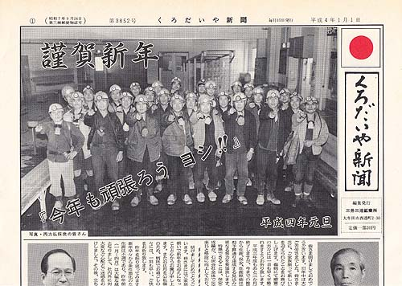

<!DOCTYPE HTML PUBLIC "-//W3C//DTD HTML 4.01 Transitional//EN">
<HTML>
<HEAD>
<META http-equiv="Content-Type" content="text/html>
<META http-equiv="Content-Style-Type" content="text/css" media="all">
<TITLE>みいけ展示室</TITLE>
</HEAD>
<BODY>

<BLOCKQUOTE>
<TABLE>
  <TBODY>
    <TR>
      <TD width="516">
      <P class="MsoNormal" style="text-indent:71.65pt;mso-char-indent-count:4.92"><B style="mso-bidi-font-weight:normal"><FONT color="red" size="+1">展示品１</FONT><SPAN lang="EN-US" style="font-size:16.0pt;
mso-font-width:90%"></SPAN></B><BR>
      </P>
      <TABLE>
        <TBODY>
          <TR>
            <TD width="91"></TD>
            <TD width="404">　　　<B>昭和31年大牟田市街地図</B><P>
            　　　　　昭和31年5月20日発行<P>
　　　　　　　　　定価50円
            </TD>
          </TR>
        </TBODY>
      </TABLE>
      <p class=MsoNormal style='text-indent:11.0pt;mso-char-indent-count:1.0;
line-height:17.0pt;mso-line-height-rule:exactly'><FONT face="MS UI Gothic">「現在の大牟田市はここ数十
年の間に、全国屈指の鉱工業都市として発展した所以のものは、実に石炭資源の賜である。<BR>
　明治6年石炭採掘が官有となり、同21年三井家がこれを譲り受け、本格的な採掘に乗り出してから、快速調で発展の
一途をたどることになった。明治22年横須、稲荷、下里、大牟田の4カ村が町村制実施によって大牟田町となり、24年には
鉄道が開通し、三池港の築港工事が始まり、35年には大牟田港の起工、36年電話も開通した。炭鉱の発展に伴い、人口も
増加し、大正6年市制を施行、人口7万8千の大牟田市が誕生した。大正10年に水道開設、昭和2年市内電車の布設となり、
市役所新庁舎も完成、市勢いよいよ高まり、昭和4年三川町を合併し、更に16年玉川、駛目（はやめ）、三池、銀水の2町2村
を編入、目覚しい発展を遂げた。しかるに、昭和20年不幸にして戦災を受け、市街地の大部分を焦土に帰したが、市民の努力
により漸次（ぜんじ）復興の歩を進め、昭和30年10月現在人口20万2274人を算して、面積72平方キロ余、東と北に山岳丘陵
を負い、温度湿度共に快適、石炭を原料、動力とする化学工場の煙突は林立し、三池、大牟田の両港には船舶の出入り絶えず、
拡大な道路は縦横に走り、商店街又軒を連ね、踵（きびす）を接して疾走するトラック、バス、ハイヤー等大牟田の表情は
明日の発展に向かって限りなく頼もしいものがある。」（大牟田市街地図より抜粋）<spanlang=EN-US style='font-size:10.0pt'></span><BR>
　なお、平成20年10月1日現在の大牟田市住民基本台帳人口は、世帯数57,191、人口128,964、落ち着いた街となっている。

</FONT></p>
      </TD>
    </TR>
  </TBODY>
</TABLE>
</BLOCKQUOTE>

<BLOCKQUOTE>
<TABLE>
  <TBODY>
    <TR>
      <TD width="516">
      <P class="MsoNormal" style="text-indent:71.65pt;mso-char-indent-count:4.92"><B style="mso-bidi-font-weight:normal"><FONT color="red" size="+1">展示品２</FONT><SPAN lang="EN-US" style="font-size:16.0pt;
mso-font-width:90%"></SPAN></B><BR>
      </P>
      <TABLE>
        <TBODY>
          <TR>
            <TD width="91"><B>くろだいや新聞</B>（提供浜崎忠勝氏）</TD>
            <TD width="404"><P>
            　　　　　平成4年1月1日号<P>
　　　　　　　　　定価20円
            </TD>
          </TR>
        </TBODY>
      </TABLE>
      <p class=MsoNormal style='text-indent:11.0pt;mso-char-indent-count:1.0;
line-height:17.0pt;mso-line-height-rule:exactly'><FONT face="MS UI Gothic">毎月15日、三井三池鉱業所発行。定価20円となっているが、実質は組合員に
無料で配送されたという。同新聞には連載漫画「ドリルさん」が昭和26年11月から始まり、同37年からは「ゴッつあん」とタイトルを変えて連載された。
平成9年の三池炭鉱閉山までくろだいや新聞は70年続いた。連載漫画の作者は甘木太郎こと園田鉄雄さん。昭和2年生まれ。故人。本人亡き後、奥さんと息子さんが
「ゴッつあん」というタイトルで連載漫画をまとめ出版された。<spanlang=EN-US style='font-size:10.0pt'></span>

</FONT></p>
      </TD>
    </TR>
  </TBODY>
</TABLE>
</BLOCKQUOTE>

</BODY>
</HTML>